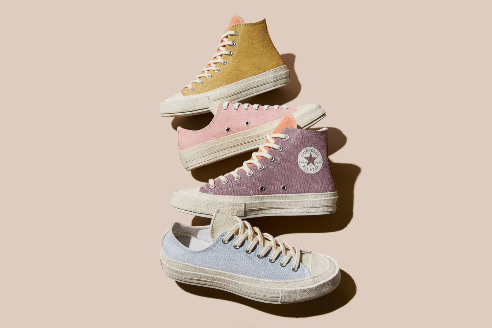
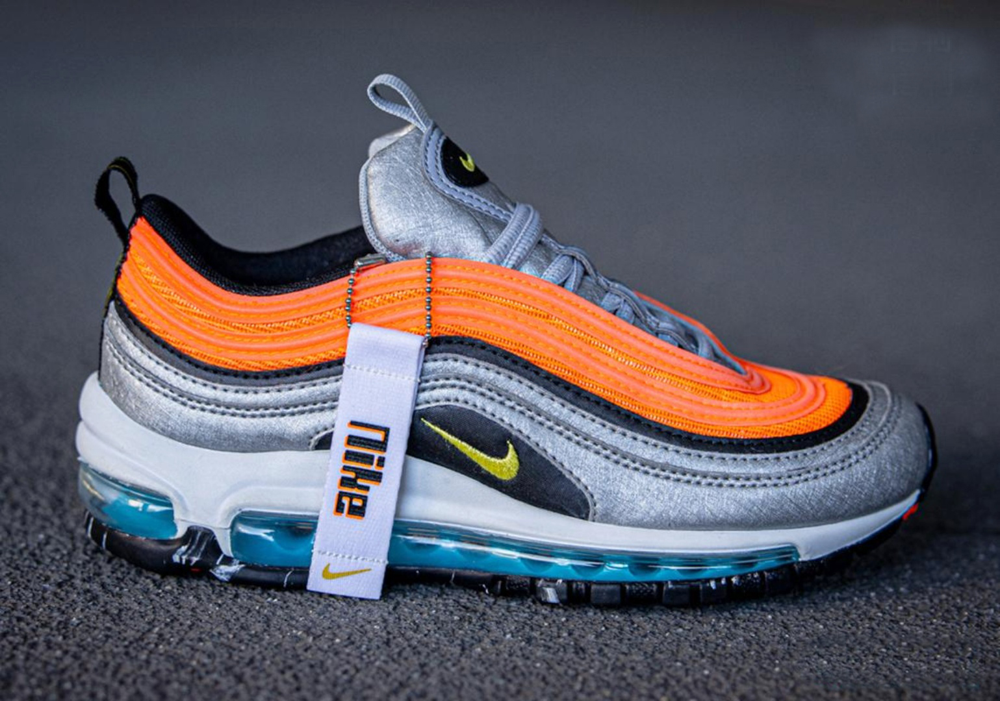
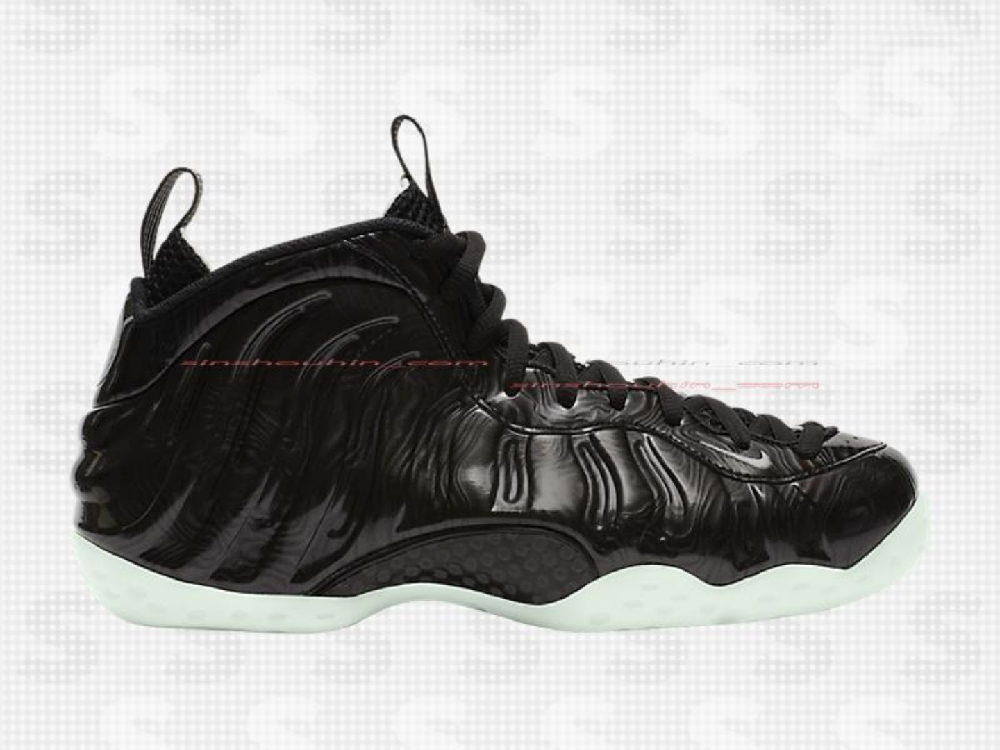
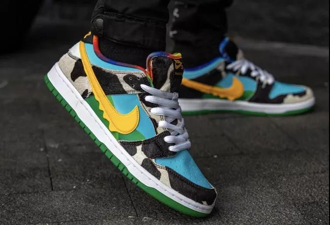
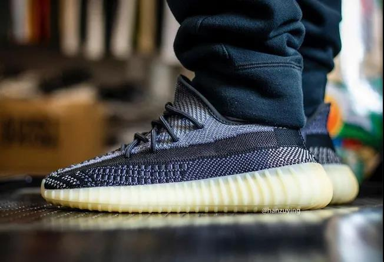
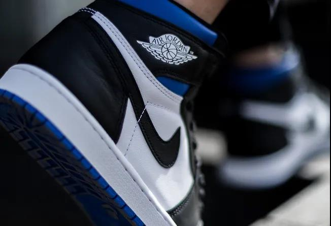
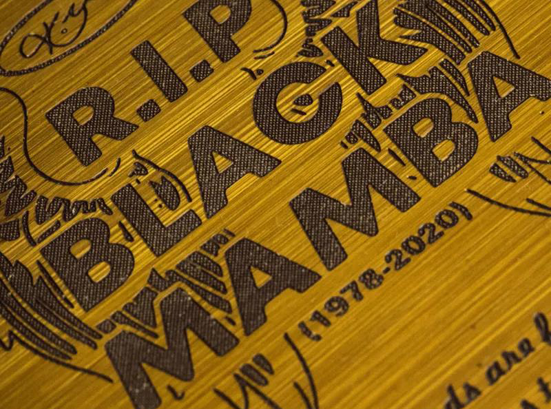
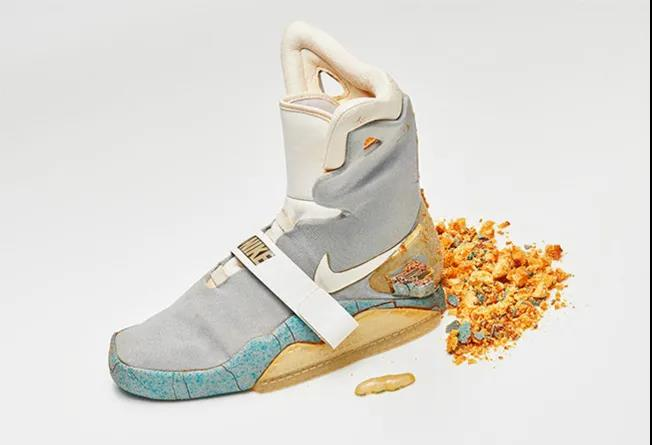

NEWS
-

Sneaker Con Dallas
Date：14.5.2020
Every year TEXAS lives up to the reputation that everything is BIGGER. Our event in Dallas continues to be one of our benchmark events in the U.S. and it is one you don't want to miss. One of our biggest collection of ...
-

Converse为夏季带来全新彩色Renew系列Chuck 70
Date：14.5.2020
去年Converse推出过Renew系列，旨在通过使用剩余织物面料和可循环利用棉帆布制作产品，减少消费者使用后以及工业生产时产生的废料。今年夏天，Converse带来色彩更加丰富的Renew系列鞋款，同样是使用鞋类制造工艺中的废弃棉帆布打造。
-

实拍预览Sky Nike系列配色Nike Air Max 97 GS
Date：14.5.2020
Foot Locker将与Nike携手推出独占贩售Sky Nike系列鞋款，实拍展示的Air Max 97 GS是系列中的一款。采用网眼织物与人造革制作，橙色、黑色、金属银色装饰鞋身，配上黄色细节与蓝色气垫呈现。此款预计6月发售。
-

木纹缀饰？预览黑色新款Nike Air Foamposite One
Date：14.5.2020
Nike Sportswear将再添一款新配色Air Foamposite One。选以黑色作为鞋身主色调，鞋面附上近似木纹的印花装饰，再配上疑似夜光外底呈现。暂时未知发售日期。
-

冰淇淋 Dunk SB 本月发售！
Date：14.5.2020
关于Nike SB与冰淇淋公司Ben & Jerry’s合作设计的新款Dunk Low “Chunky Dunky”，近日终于有了确切的市售计划。款式官方配色信息为“白色/闪烁湖蓝-黑色-大学金”，5月23日登陆指定滑板店铺，5月26日上线SNKRS App。
-

Yeezy 350 V2 加入全新设计！想要买还得再等等...
Date：14.5.2020
上月底 Yeezy Boost 350 V2 曝出一双全新配色：Yeezy Boost 350 V2 “Asriel”，黑白色系受到了不少人的喜爱。近日 Instagram 球鞋账号 hanzuying 率先带来这双鞋的实物细节及上脚照。
-

最便宜的黑脚趾 AJ1！有些人不待见，但上脚好看到犯规！
Date：14.5.2020
来到 2020 年，Air Jordan 1 依旧是关注度最高的鞋款之一，但发售后的市场行情，却与去年暴涨有着截然不同的走势。一方面货量增多，降低了涨价空间。另一方面天气逐渐炎热，皮质球鞋并不太吃香。所以许多素质不错的 Air Jordan 1 新品，都面临着不受待见的境遇。
-
「鞋王」又来拉仇恨！这双 Kobe 5 全网仅此一双！
Date：14.5.2020
「鞋王」PJ Tucker 又晒狠货了！今早通过个人 ins 及新浪微博分享了一双罕见的 Nike Kobe 5 PE。鞋身以白蓝为主调，鞋垫方面刻画有科比肖像与球衣号码 24，明黄色鞋带与紫色内衬营造传统湖人的经典气氛。而主打轻量化的鞋面采用独特的纹理勾勒，释放出华丽的视觉冲击。
-

打开鞋盒瞬间泪目！限量 24 双的科比球鞋抢先开箱！
Date：14.5.2020
今天是科比离开我们的第 107 天，在这三个多月中，无数明星、球员、球迷以各种方式表达对他的追思。很多职业球员选择上脚科比球鞋，更有不少球鞋定制高手不计成本，为纪念科比打造定制球鞋。国内定制团队 FZBB，就在近期完成了一双纪念科比的 Air Force 1 Low。
-

这些「真天价鞋」你肯定没见过！
Date：13.5.2020
在你心里，多少钱的球鞋有资格被称为天价鞋？五千？一万？五万？还是十万？那可能还得需要你再发挥一点想象力！ 因为今天要说的这些鞋几乎都是十万起步，还得是 dollar！看完真的颠覆球鞋观。有的鞋碎成渣儿了都得花几十万抢，有的甚至轻轻松松能换北京二环一套房！